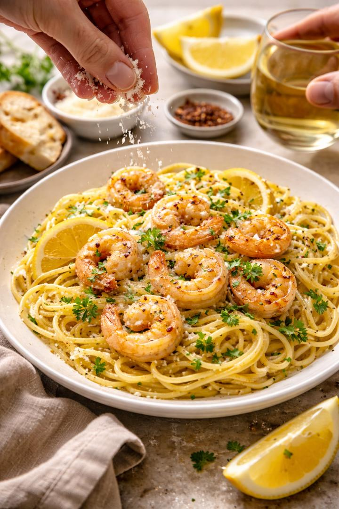

Home
Shrimp Scampi

Discription
Shrimp Scampi is a quick and flavorful Italian-American dish made with succulent shrimp sautéed in garlic, butter, lemon juice, and white wine. It’s perfect served over pasta or with crusty bread for a light yet satisfying meal
Ingredients
- Large shrimp (peeled and deveined)
- Butter
- Lemon juice
- White wine
- Fresh parsley
- Garlic cloves
- Olive oil
- Salt and black pepper
- Red pepper flakes
- Spaghetti or linguine
Steps
- Bring salted water to a boil and cook pasta if using. Drain and set aside
- Heat butter and olive oil in a large skillet over medium heat.
- Add garlic and sauté for 1 minute until fragrant.
- Add the shrimp, season with salt, pepper, and red pepper flakes, and cook until pin
- Pour in lemon juice and white wine (if using) and let it simmer for a minute.
- Toss the shrimp with pasta or serve on its own.
- Garnish with fresh parsley and serve immediately.